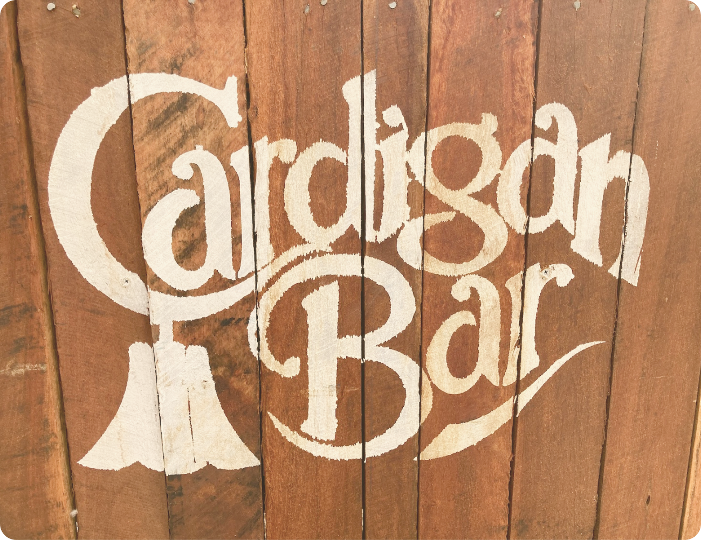
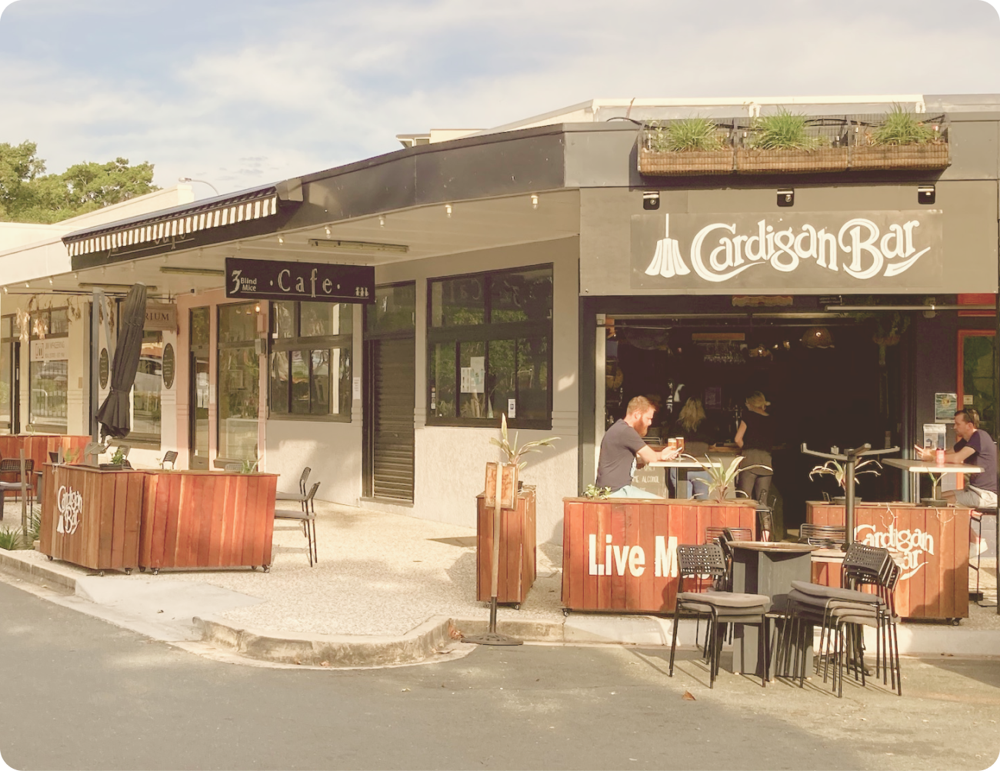
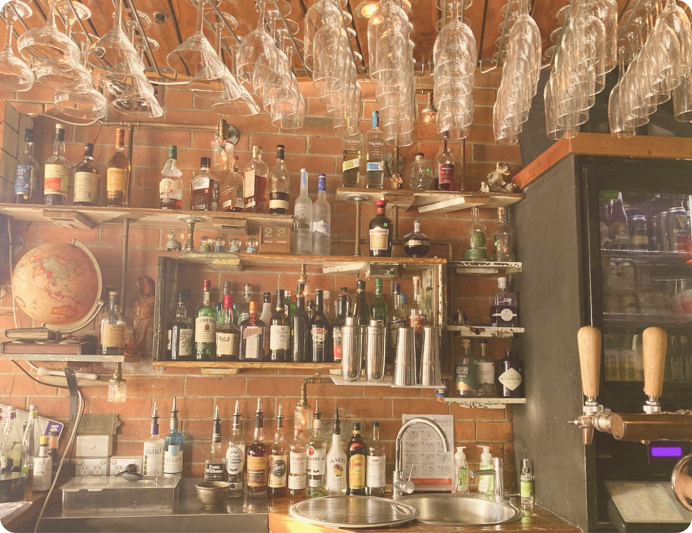
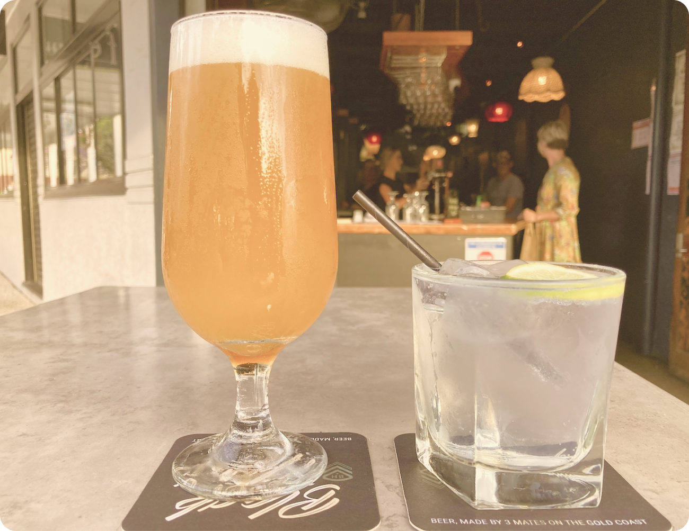
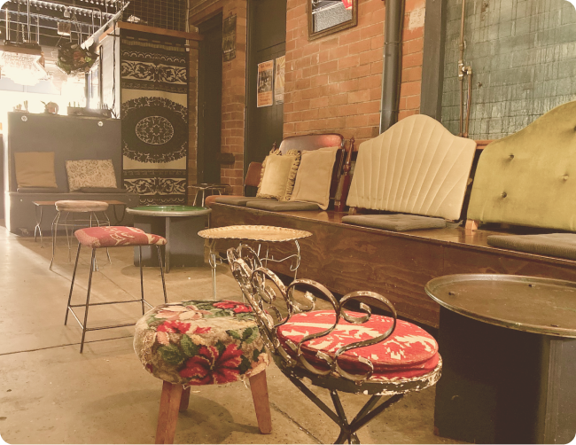
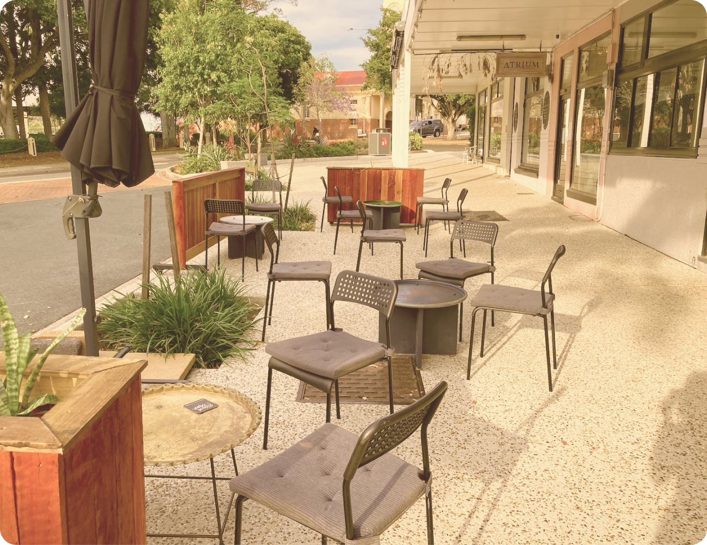

Cardigan Bar feels almost magical in the way that it appears as the sun is going down. During the day you’ll be hard pressed to find the location but from 2pm onwards you’ll recognise it from it’s stenciled wooden pallet planters.
Cardigan Bar offers a relaxed atmosphere with rock and roll classics from the sixties through to the eighties always playing and often live music to be enjoyed too.
The bar is well stocked with everything needed for your favourite cocktail. The staff are super friendly and ready for a chat while they mix you a drink.
Cardigan Bar has a wide range of craft beers as well as all your old favourites on tap and in the fridge. They’re also home to the Sandgate Whiskey Club..
There’s plenty of space to sit with an eclectic and atmospheric range of seating and decor inside the industrial chic space. The interior feels especially cozy and intimate on a cool winters night.
There’s also a bunch of outdoor seating to grab the beautiful bay breeze with many small dogs acompanying their owners for a Friday afternoon drink.
